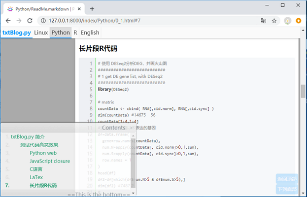

Python web 服务
目录
要点: Python的网络功能。
Python与网络服务
查询IP地址: $ ifconfig 看 eno1网卡的 inet 192.168.2.120 就是IP地址。
开启简单web服务
开启web服务，就可以通过浏览器直接查看图片、pdf、txt等常规文件，而无需下载。
这特别适合调试画图脚本参数：shell中修改并运行，浏览器刷新立刻预览效果。
## 在centOS + python3.6测试通过
$ python -m http.server --bind 192.168.2.120 8890
$ python -m http.server 8900 # 使用默认IP地址
## 要在待预览图片所在目录或其父目录运行该命令;
## --bind 后面是服务器公网IP地址 和 端口号；
## IP地址可以使用ifconfig查看，也可以使用指向该IP的域名;
## 端口号一般在6000-65535之间的整数。需要服务器防火墙允许 或者 关掉防火墙。只能使用没被占用的端口。
以上代码建议在tmux中运行，这样http服务就可以常驻后台了。
运行这一行代码后，会输出一个url，打开浏览器，就可以用该url访问资源了，可以预览图片、pdf、txt等，也可用于局域网传输大文件。
iptables开放端口访问权限
开放8787端口访问 # iptables -I IN_public_allow -p tcp --dport 8787 -j ACCEPT
开端口是系统资源，需要root权限或者sudo权限。
运行服务器上的 Jupyter notebook
jupyter notebook --no-browser --port 7000 --ip=192.168.2.120 # 以上代码建议在tmux中运行，这样jupyter服务就可以常驻后台了。
然后通过本地浏览器作为客户端，就可以直接使用服务器硬件和文件了。
http://192.168.2.120:7000/?token=3816b9c204abfd22c38ba70cd298c262d01ad826215beffb (注意替换IP、端口号为当前设置的值，token为每次运行自动生成的登陆凭证)
基于python的笔记管理系统txtBlog.py
[知识管理]A simple yet powerful blog system for reading and organizing txt files, based on Python3 flask framework. 支持txt, html, markdown 格式的笔记。
整体结构

对markdown的支持，自动代码行号，左下角自动生成悬浮目录。
